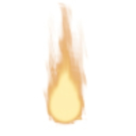
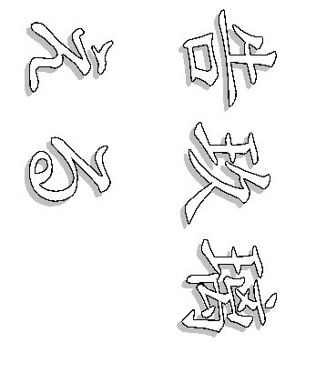
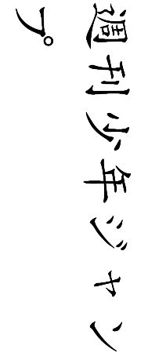
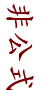
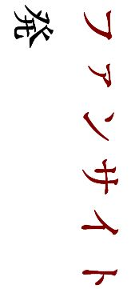
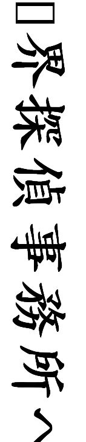
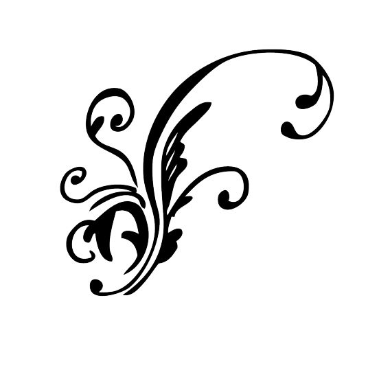
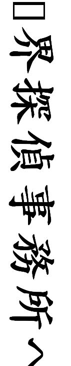
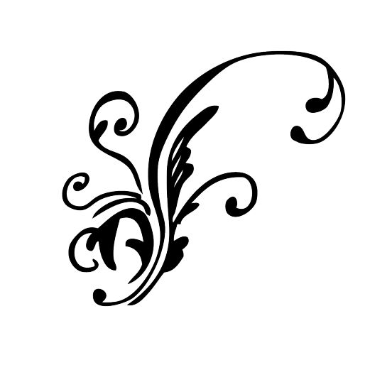

| ようこそ、霊界探偵事務所へ 後編 | |
| 告玖璃える | |
| (2015) | |

      
 
この度はご購入頂き、誠に有難うございます
この電子書籍は個人的に作られたファンブックです
原作・アニメ・出版社・その他関係者様とは一切関係がありません。 内容に関してはフィクションであり、実在のものとは一切関係がありません。
同人をご存じない一般の方や関係者様のお目に触れないようご配慮をお願いします
著作権がありますので、インターネットでの二次販売をされませんようご注意ください
サークル名：原作主義PLUS
執筆者：告玖璃(つくり）える
サイトURL：http://000813.web.fc2.com/index.html
メールアドレス：winterbird021102@gmail.com
pixivナンバー：2905612
～ようこそ！霊界探偵事務所へ～
キャラクター設定
→こちらは※パラレル小説となっているため、原作と多々異なる点があります。この場をお借りして紹介させて頂きます。
浦飯幽助...所属；皿屋敷中学２年
兼 『霊界探偵事務所』 霊界探偵
不慮の事故で一度霊界と関わり合い、霊界探偵に任命される。
雪村螢子とは幼なじみ。
本編にてその活躍ぶりを確認すれば分かる通り、カタチある任務をこなしているせいか、働きぶりは意外としっかりしており、責任感も意外とある...。
桑原和真...所属；皿屋敷中学２年
兼 『霊界探偵事務所』 事務所員
幽助とは喧嘩仲間であると同時に同級生でもある。
不良グループのリーダーであったが、噂になっている幽助の事故死・復活事件の情報を的確に知っている数少ない人間の一人でもある。
この作中で、桑原は※たまに呪符を使ってごまかすことがある。
基本的に世話焼き・真面目なところも。
⇒幽助・桑原は霊感の強さ故に学校生活に溶け込めず、義務教育は修了してないが、霊界都合で霊界が関与する事務所を運営するスタッフということにさせられている。
蔵馬（南野秀一）...所属；盟王学園高校２年
兼 『霊界探偵事務所』 事務所員
妖狐が息絶えそうになる寸前で、人間界に逃げ込み、人間の胎児に憑依融合し南野秀一として生活していた。
常に下等妖怪に命を狙われていたが、あるとき突然現れた強敵から助け出したという幽助と知り合ったことをきっかけに、霊界探偵事務所の運営を手伝っている。
勿論、報酬は受け取っており、ボランティアではないが、事務所の経営があまりにも悪いため、最近ではボランティア化している。
世話焼きで、食事を作ったり家庭的なことも難なくこなせる。
しかしそれ故毒舌家でもあり、心配性でもある。
コエンマ...霊界；閻魔大王の息子。
老人のような特徴のある喋り方をするが、霊界では赤子の姿であり、人間界では２０代（？）の姿をとる。
人間界でも正真正銘『おしゃぶり』をくわえていることから、見る者に奇妙な印象を与える。
ぼたん...霊界案内人 兼
『霊界探偵事務所』 霊界探偵助手 兼 占い師
占い師としての腕は右に出る者なしの百発百中。
人間界で資金稼ぎをし、霊界が人間界を監視する上での活動費としている。
雪村螢子...浦飯幽助の幼なじみ。
クラスでは学級委員を務め、部活動にも積極的に取り組んでいる優等生。
幽助が一度不慮な事故に遭い、霊界によって奇跡的な生還を遂げるまで、的確な情報を知っている数少ない人間の一人。
～ようこそ！霊界探偵事務所へ～
【来訪者】
飛影...連続殺人事件の犯人として、捜索されている少年。
しかし幽助により、その少年自身の犯罪でないことを瞬時に見極められ、事務所に連れ込まれる。
記憶喪失であったり、奇異な事情を持ち合わせているが、霊界探偵事務所は果たして少年を救えるのか...？
※パラレル小説とは
キャラクターは全く変わらないが
設定や世界観などを少し変えた中での二次創作
ようこそ！霊界探偵事務所へ 後編
「うっ...！」
首が締め付けられる苦しさで、ぼたんは意識を取り戻した。
（やっと起きたの？）
何処からともなく、あの幼くも可愛らしい少女の声が響いてくる。
しかし、その声が口にする台詞は恐ろしいまでの脅し文句だ。
「此処は何処なんだい？ アタシをどうする気なのさ？」
枯葉を敷き詰められた土の上。
見上げれば気が遠くなるほどに細く、こちらを見下している木々。深い闇。
（手伝ってもらいたいの。私が彼を殺すのは容易いことだけど、どうしても会ってこの手で殺してやりたいのよ）
「アンタのしてることは間違ってる。飛影を使って、殺人を犯したのはアンタだね」
ぼたんは地に手をつくと、立ち上がった。
「あっ！！！」
念でできたような見えない糸が途端にぼたんの首を締め付ける。
「役立たずね」
どんなに緩めようと自らの手を回しても、締め付けている実体がない。
ぼたんは苦しさに喘いだ。
と、その時。
「霊丸！！」
眩くも淡い光が辺り一面を覆い尽くす。
余韻を残しながら光が消えていくと焦げ爛れたような酷い悪臭が漂った。
「！」
ぼたんを拘束していた存在は消え、木の陰から何かが飛び出した。
ぼたんが崩れ、激しく咳込みながらもそちらに視線を向けると、それは腹が貫通したと思われる先ほどの少女であった。
ゆっくりとこちらに歩んできた幽助が少女の近くで足を止める。
中心に開いた大きな穴を見遣ると、溜め息をついて腰に手を当てた。
「...オメーか。飛影を苦しめてた張本人、ってのは...」
仰向けになったまま、見上げていると思われる雪菜の顔は手入れもされていないであろうボサボサの髪の下に覆われている。今どんな表情を浮かべているのかさえ見ることができない。
唯一見える口元が屈折した感情を映し出すように歪められ、不穏な笑い声を漏らした。
「あはは、あはははは...」
古い血痕が散ったままの服装。
それを一瞥すると、幽助は雪菜に質問を浴びせた。
「オレは霊界探偵だ。立場上、飛影を放っておく訳にはいかないんでね。それよりオメーさ、何で飛影を狙ってる？ お前が今捕らえていたのは霊界の関係者なんだぜ。早いとこあの世に送ってもらえよ」
それを聞くと、雪菜は更におかしそうに笑った。
血色は既になく、変色した堅い肌。それが引き吊れて笑う。乾き切った唇もそのまま形が失われてもおかしくないほどに変質し切っている。
とても生命を宿していた身体だとは思えない。
幽助は哀れむような気持ちになった。
「......私は奪うの。だって、こんなに焦がれているもの」
固まった血液と泥とで汚れ切った髪から覗いた右目が、幽助を直視している。
飛影と同じ燃えるような赤い瞳。だが、それも既に乾き切り憎悪と薄笑いとを含んでいる。調査通り、雪菜に左目はなく、左腕も腕の関節から下がないように見受けられた。
「あなたでもいいわ。...あの人を殺して。あなたに生きられる世界はないって教えてあげるの」
幽助は溜め息をつき、もう一度大きく深呼吸すると吐き出した息をそのまま言葉に換えた。
「...何で、そーやってアイツを追い詰めようとするんだ？ オメーだって、アイツから離れて自由になりてーってそう思わねーのか？」
雪菜は地に伏したまま、また笑った。
「ヒエイは...、私のものよ」
ぼんやりとした口調で呟かれる。
「その証拠にね...」
薄汚れた衣服のポケットらしいところから割れた手鏡をぎこちない、蝋人形のように青ざめた腕が取り出して見せられる。
「どう？ 見える？」
一瞬、攻撃的な光を放ったそこに何かの映像が映し出される。
幽助が一度目を細めてよく見ると、そこに映し出されたのは話の渦中にある飛影であった。
彼はその腹を穿たれ、あのソファーの上で今まさに絶命の危機に晒されていたのだ。
それは、つい先ほど幽助が雪菜を止める為に、霊丸を嗾(けしか)けたところと全く同じ場所に位置していた。
「...飛影！！！」
幽助が思わず叫んだのと同時に、雪菜はおかしそうに笑った。
☆☆☆☆☆☆
全身を冷や汗で濡らし、次第に怪しくなってきた呼吸が飛影の喉をヒューヒュー鳴らしている。
「幽助のヤツ、派手にやりおって...」
飛影の土手っ腹にある見事な風穴を見てコエンマは眉を顰めた。
お陰で脅迫文は消し飛んだが、そういう問題ではない。
「蔵馬も向かわせたから、なんとかなってるはずだろ？」
桑原も飛影が寝かされているソファーの下の床に胡坐をかいたまま、彼の様子を堅く見守っていた。
コエンマは一度深く溜め息をつくと、ゆっくりと立ち上がった。
「飛影。...残念だが、ワシの前では白々しい演技など通用せんぞ」
桑原がコエンマに振り返る。
「今のコイツは...、...魔界から送り込まれた方の人格だ」
桑原はそれを聞いて納得するとそのまま立ち上がり、右手に現れた霊剣を構え、コエンマの前に出た。
コエンマが下がって腕を組むと、飛影は目を開き唇の両端を吊り上げた。
「いつ、気づいた...？」
「うむ、つい先ほどだがな。...今のお前じゃ、腹を吹き飛ばされても何とも感じんだろう」
「......話を聞く限り、お前が霊界のトップだとな。見るからにふざけたツラしてやがる」
飛影は上体を起こすと、コエンマを見上げた。
「言葉に気をつけろ」
「オレを魔界側・人間側と区別しているのか？ ヤツだって立派な妖怪だ。この肉体に宿っている限りはな。一応訊くが、純粋な人間の定義とは何だ...？」
コエンマは腕を組んだまま身動き一つしない。
桑原が霊剣を構えたまま、飛影の言動を細かくチェックしている。
「...自覚だけで、体力も妖力も著しく変化する。そういうものだ。オレが、とか、ヤツが、という概念は必要ない」
「言い訳なら聞かん。...お前は結局、今の立ち位置を諦めたくないだけだ」
飛影の腹に開いた風穴が僅かに発光し始めている。
人間としてのそれではなく、妖怪として生命維持しようという魔界の本能だ。
「オレも貴様の言い分は聞かん。あの女を魂から抹消しろ。一刻も早く切り離せ」
桑原は額から汗が流れていくのを感じた。
「うむ。穏便に解決したいと思っていたが、...その気もないか。今の立場を一度諦めてさえくれれば、お前には新たに機会が巡ってこようと言うのに」
「女の魂の死だ。それ以外に望むことはない」
「...ユキナはお前から離れまい」
物凄い殺気が飛影の中に集中されていく。
桑原が構えている霊剣が、妖気を察知して細かな振動を立てる。
「フン、つくづく役に立たん連中だ」
飛影は吐き捨てるように言うと、即座にその場を立ち去った。
今し方まで猛烈に殺気立っていた妖気が忽然と目の前から消えたのを感じる。
桑原は自らが全身に嫌な汗をかいているのを改めて実感した。
手中で霊剣が原型を留めようとしてはいるものの、その形を保ち切れず、たまにヴーンと唸っては霊気が大きくブレる。
「...オイオイ、どうなっちまってるんだー？？」
ようやく緊張の糸を解いたらしい桑原だが、手元の得体の知れない現象に驚きを隠せないようだ。
「力の差はお前よりヤツの方が上だと、そう主張したいんだろう...。何せ、ガキだからな...」
コエンマはふぅ、と溜め息をついた。
桑原の霊気を分解しようとしている...。
だが、この程度なら暫く経てば元に戻るな...。
どういうこと？、と問い質したいらしい桑原を差し置いて、コエンマは部屋を後にした。
たまに乱れる霊剣を手中に完全に収めると、桑原は慌ててコエンマの後を追った。
☆☆☆☆☆☆
「ヒエイに行き場所なんてない。帰ってこれる唯一の場所が私のところなのよ」
雪菜の肉体は吊り上げられたように、不自然な動きで起き上がると、そのまま正面に幽助と向かい合っていた。
生温く不快な風がどこからともなく吹き抜けていく。
僅かに舞い上げられた空気の流れに乗って、血液のような鉄臭さが鼻についた。
「そうやって束縛して、楽しいかよ...」
右手に拳が作られると、それはしっかりと握られ全身の霊気が集中した。
幽助はわずか数メートルしか離れていない場所でゆらりと立ち竦んでいる雪菜に人差し指を構えた。
「ヒエイが傷つくだけだわ」
「...やってみなきゃ分かんねーぜ。場合によっちゃ、オメーだけが再起不能になるかもな」
全身の霊気が人差し指に集中されていく。
「霊丸！！！！」
避ける気力すら残っていなさそうな雪菜は、その場にゆらりと立ち尽くしたままであった。
これでは直撃は免れない。
実際、彼女自身も自らの死んだ肉体を操るにはかなりの負担になっているはずであった。
直線を描いた霊丸が雪菜の額で炸裂し、後頭部まで容赦なく貫いた。
後ろでぼたんがはっと息を呑むのが伝わってくる。
雪菜は何の抵抗もなく、そのまま後ろに倒れた。
「あぁ...、飛影は大丈夫なのかい？ 頭...」
思わず口走るぼたんはすっかり青ざめている。
「さあな」
幽助は軽く一息つくと、そのまま仰向けに倒れたまま動かない雪菜の方に目をくれた。
呪術の類（たぐい）が発動されている場合でも、念が発せられる場所を断ち切れば、それが例えどんなに強力だったとしても絶たれる。
その念力が働く場所とは額だ。
それは霊力を向上させるために受けた修行の中で学んだ知識の一つだった。
飛影じゃねー。術師側は雪菜だ。
だから、雪菜から断ち切ったのは間違ってねーはずだ。
ただ雪菜が既に死んでいるから、実際にこれで結界が断ち切れるかどうか分からねーってのが引っかかるけどな...。
「さあな、じゃ済まないよー！」
「うっせーな...。向こうにはコエンマがいんだから、最悪なんとかなってるさ」
未だ茂みの中に仰向けになっている雪菜はそのままびくともしない。
「死体損壊罪で捕まりそうだぜ...。それより、ぼたん。これでうまくいけば、飛影のヤツは自由になるんだろ？」
雪菜がこのままただの死体に戻ってくれれば、このボランティア活動に間違いなく終止符を打てる。
幽助は雪菜が二度と起き上がらないことを祈った。
「いや...。そんなに単純じゃないんだ、幽助」
ぼたんの声のトーンが落ち、深刻な意味合いを含んでいた。
「飛影は...、実は死んでいるんだよ」
「え...？」
幽助は言葉を失った。
「何でだよ？ アイツはまだ生きてんだろ？ どういう意味だ？」
「アンタに伝えるつもりだったんだ...。飛影は死んでる...。この子と一緒にね。幽助、アンタが言いたいことは分かるし、確かに飛影はまだ生きている...。だけど今の生きてる飛影は、雪菜ちゃんと、雪菜ちゃんと対になっている自分の中のもう一人の人格の方、二人の命を奪ったんだ」
「ん...？ それじゃ飛影は...二人いるってことか...？」
「そういうことさ。何故かは分からないけど...、霊界で調べたところ、飛影には二つの命が授かっているんだ。二重人格ということじゃなくて二つの魂が同じ体に宿ってる。...雪菜ちゃんと対になっている方のヒエイは彼女と同時にとっくに死んでいる。双方ともに死んだのに、何でこの呪縛が解けないかというと、雪菜ちゃんに影響されない方の飛影が生きているから、みたいなんだ...」
背後に音もなく立ち上がる気配がある。
振り向くと、更に髪を乱した雪菜が性懲りもなく立ちはだかっていた。
「許さない...、飛影。どうして、私を殺したの...？」
悲しくも冷たい風がどこからか吹き付けてくる。
「そりゃ、オメーが脅しまくってたからだろ」
幽助は呆れながらも、真向かいから唐突に猛威を振るう風の手前、右腕でそれを遮った。
「結界は解かれた。もう飛影との絆なんか存在しねーんだ。早いとこ自由になれよ」
正面にふらりと立ち尽くしている雪菜の額には、後頭部まで貫通する霊丸の大きな弾道が残されていた。
右目の眼球は窪んだ眼窩の中に落ち込み、全く別の方向を向いてしまっている。
下顎が不気味な薄ら笑いを浮かべたままの状態で硬直している。
もはやその肉体からの声ではない。
空いっぱいに張り裂けるような声が響き渡る。
「言うな言うな言うな！！！ 私は...！飛影とずっと、ずっと一緒にいるんだ...！！ お前なんかに、私の気持ちなど理解できない」
泣き叫ぶようなヒステリックな感情が伴われた声音に、彼女は今、前後不覚に陥っているように見受けられた。
幽助からすればハッタリをきかせていただけだったが、どうやら本当に結界が解けたらしい。
「ああ、理解できねーな。オメーは飛影を苦しめて何がしてーんだ？」
四方八方から手裏剣のようによく切れるナイフのようなものが次々に飛んでくる。
「危ないよ、幽助！ 氷だよ！」
ぼたんが注意を促すと、そこへ同じものが飛んでくる。慌てたぼたんは右手の中に召還した櫂を腰の下に当てると、ふわりと宙に浮いて攻撃を交わした。
「許さない...！ 許さない！！」
雪菜は攻撃の手を休めない。
大地を揺るがす強い振動をすぐ足元に感じる。突如そこには亀裂が生じ、中から刃のように鋭い先端を持つ硬い柱が地上に向かって伸びた。
「はああ～？」
何だこりゃ...。
幽助は呆気にとられ、一瞬にして自分の身長さえ遙々と越すほど成長したそれを見上げた。
「これも氷かー。どおりで寒みィ訳だぜ」
通常冬に見かける霜柱のように、か細いものではなく、それを何百倍も何千倍も威力を強めたものであるかのようだ。
地面から逆さまに突き出す巨大な氷柱を宙でよけながら、ふわりと近くで低空飛行しているぼたんが後ろに回ったのは、気配で分かった。
「ぼたん。結界は壊したのに、飛影から別人格を切り離せないのはどういうことなのか、もっと納得のいくように話してくれ」
一瞬の隙を突いて、二人の間に地中から大きく成長した氷柱が大地を突き破った。
ぼたんも難なく交わすと、すぐに幽助と接近した距離から答えた。
「いいともさ。...二人は今、双方ともに存在してないんだ。この状態だけなら、人間界にも影響は及んでいないだろうし、二人とも死ぬことによって呪縛からも解放される。だけど、問題は飛影がこの二人の間に通せんぼしてるかのように生きてるからなんだ。言ってみれば何の関係もない飛影が、この二人の影響を大いに受けてしまっているのは、元々存在する予定がなかったのに命を二重に授かったことがそもそもの発端だったという訳さ」
時間を追うごとに攻撃の威力は増していくようだが、その一方で雪菜本体の空蝉（うつせみ）はただ呆然とそこに佇んでいる。
幽助はそれを確認した。
「う～ん、やっと少し分かったような気がするぜ。じゃあ雪菜に、飛影を追っかけ回すのをやめるように仕向ければ解決するんじゃねーか？」
「アンタなら、そう言うと思ってたんだよ。でも、アンタが言ってるのは『運命をねじ曲げられるか？』と訊いていることと同じ意味なんだ...。魂が選択してきたことは、霊界にさえ左右できない...」
ぼたんも雪菜に注意しているようだが、同時に霊視も兼ねていたらしい。
言わないまでも幽助は気づいていた。
今、ぼたんの見つめる先に映る雪菜は、どのように見えているのか。
幽助は今持てる自分の力に歯痒さを感じていた。
「......どうして？ どうしてあの人には自由に生きる権利があるというの...？ ねぇ、霊界探偵さん」
雪菜の意識は未だ迷妄したまま、何かを口走っている。
幽助はそのまま振り向かずに言った。
「これ以上オレにできることはなくて、コエンマを通さなきゃどうにもなんねーってことだよな」
そう言ってはみせるものの、幽助は内心で納得できていなかった。
腸が煮えくり返るような怒りさえ感じるが、それはどこに向けられればいいのか分からない。
出口のない感情が体中を盛んに渦巻いている。
結界を断ち切っても、同じだってどういう意味なんだ...？
もう雪菜がテメーでテメーを傷つけても、飛影には全く影響がいかないってのに、そのまま...？
頭が悪りィだけなのかもしれねーけど、理解できねー。
「いずれアンタにも分かる...」
ぼたんは怒気に満ちた幽助の背中を見下ろした。
「それが生きている者と、死んでいる者の差なのさ」
何を言われているのか、さっぱり分からない。
引き下がれ、と言われて、素直に引き下がることなどできない。
幽助は危険を予測し、穏やかにぼたんから離れた。
まだ足下に大地を揺るがす振動を感じる。
オレも一度は死んだ身だ...。
特殊なケースだったとは言え、生と死の境目が分からない。死んでいる期間が短過ぎたのか...？
一瞬気を抜いていた。
足元から四方八方に氷の鋭い結晶が伸び、制服を傷つける。
ぼたんの喉から掠れたような声が聞こえた。
左脚の前面が少し触れて血を噴いたが、大した怪我にはなっていない。感覚的には、表面を少し切りつけられた程度だ。
幽助は地面を蹴って大きく飛び上がると、その後を追いかけるかのように幾重にもあらゆる角度から鋭利な結晶が攻撃を仕掛けてくるのが見えた。
大きな攻撃は交わし、段差になっている地面の向こう側へ着地すると、巨大な氷柱が肩を掠める。
痛みが走り、足元がよろける。
更にそこへ先ほどの手裏剣のように飛ぶ、薄氷が回転しながら目の前に現れた。
首を掻き切るつもりらしい。
クロスし、二つの飛翔するナイフの刃が喉を目掛けている。一度交わすと、それはそこで停止し角度を変えてはまた追いかけてくる。
僅かに触れた首の表面に一筋の線が入ったようだ。
空気に触れた傷口の表面に鈍い痛みを感じる。
動きがとんでもなく早ェ。
しかもなんか４つくれーに増えてるしな...。
幽助は全身を自らの霊気で覆ったが、それに触れて砕けるのは希で、それ以外は霊気の隙間すら縫って攻撃を仕掛けてくる。
これはそれぞれが持つ「気」の性質によるものだ。
また霊体からの攻撃というのも一因している。実体がないために、相性が悪ければ攻撃を防ぐことすら難しい。
繊細な氷を操る妖気は、幽助の霊気の中にさえ踏み込めてしまうようだ。
くそー...。どーにもならねーのか...！！！
木々の中にどんなに身を潜めようとも、それを剥ぐように切断する薄氷が襲ってくる。
数カ所に渡り、滲み出す血を拭いながらも幽助はただひたすら走り続けていた。
と、そのとき。
「風華円舞陣！！！」
ブワーッッ、と一瞬にして巻き上げられた可憐な薔薇の花びらが、辺り一帯を取り囲むと空間自体に微細な紫電を走らせた。
次々に襲ってきた薄氷は、その花びらによって打ち砕かれた。
「薔薇棘鞭刃！！！」
魔性を帯びた茨の鞭が唸り、雪菜の首に触れる。
瞬時に雪菜の首が完全に胴体から接ぎ離され、幾度となく地面を跳ねながら、深い暗闇の中に消えていった。
戦闘モードに片足を突っ込んでいた幽助が急速に青ざめ、それを見送った。
見事なカーブを描いて跳んでいった首は、一体何処へ転がっていってしまったのだろう。
「片付きました？」
何事もなかったかのように振る舞いながら正面から蔵馬が近づいてくる。
「お...、オメー...、今自分が何したか分かってんのか？」
おそるおそる雪菜の方を一瞥すると、そこには首のない胴体から下の部分が、更におぞましい雰囲気を醸し出し、首を跳ね飛ばされた勢いで体勢を崩し倒れていた。
いよいよもって行き場をなくした廃人のようだ。
「大丈夫。死んでも生きてもないからね」
蔵馬は穏やかに振る舞っていたが、幽助には畏怖の念を引き起こすような異様な光景にしか映らない。
「...もし、これでまだ結界が破れてなかったら飛影の首もブッ飛んでるんだぜ？」
「首から上をなくせば、もう実質飛影に影響はいきませんよ。先に貴方が額を撃ち抜きましたしね...」
幽助はそれを聞いて、肩を撫で下ろした。
蔵馬も溜め息をつくと、体勢を整えた。
「しかし...、厄介なことになりました。相手の逆鱗に触れたみたいです」
いつの間に薔薇棘鞭刃から変化を解いていたらしい、一輪の薔薇の花を手にしていた蔵馬はそこから、霊的エネルギーが流れる方向を探り当てた。
「用心した方がいいですね。...命を失っていながら思念だけで死んだ肉体をも操り、攻撃力も高いというのは妖怪でも類を見ません。さすがに人間界に送り込まれただけのことはある」
蔵馬の動物的な勘が警笛を鳴らしているらしい。その声からも緊張感が伝わってくる。
幽助は頷いた。
飛影を殺す願望が晴れない限り、雪菜は何度でもオレ達から奪いに来る...。
「けどよ、蔵馬。雪菜を説得できないのか？」
「危ない！！」
ぼたんの声が届く前に、幽助は反射的に交わしたが地面の亀裂がまたより一層深みを増し、細部にまで及んでいく。
「......死後は特に、と言っては何ですが生き方の形が定まってしまうんですよ」
蔵馬の発言を認めない声が何やら泣き喚いている。
「ぼたんも、なんか言ってたな...。運命を変えるのが無理だって...？ オメーもそう言いてェのか？」
「...彼女達の生き方は最初から仕込まれたものだった。決して覆されることのない宿命だったんです。刷り込まれていた価値観を変える、というのは困難を極めることです。死後、というのは誤りですね。まだ彼女は飛影の誤算の分、死に切れてない...。...貴方が絆を絶って肉体に影響が出なくなっても、まだあの二人は精神的な面で繋がっている。...これはもう、オレ達にはどうしようもできない次元の話だ」
「本当にどうにもならねーのか？」
「...残念ながら。生命を統べ括る霊界に全て託しましょう。貴方の言葉は相手の神経を逆撫でするだけだ。コエンマがそろそろこちらに向かっているはずです。それまで、なんとか持たせて下さい」
蔵馬は一輪の薔薇を顔の前にかざして目を閉じた。
苦悩と憎悪とが一緒になったような念の塊が、物凄い形相でこちらを睨みつけているのを感じる。
「...貴女は飛影を最大限に傷つけたいようですね」
蔵馬はその想いに感じるところがあったのか、確認するように言葉を漏らした。
「...ああ。そんなことをしたって何もならねーのにな」
幽助は次々に襲いかかってくる氷の刃を交わしながら、たまにそれを右手だけに集中させた霊気で氷の塊を破壊していく。
実体のない相手は、かなり手強い。
無尽蔵だと言っていい妖気が冷気を操り、何度も攻撃を仕掛けてくる。
雪菜の力を無効にする決定的な媒体をなくさなければ、いくら防御していても意味がない。
彼女の破壊力は想像を絶するほど強い。
これでは苦戦を強いられずとも、幽助がイライラするのも理解できなくはない。
蔵馬の脚の側面に、強い冷気が吹きつけられ、瞬時に衣服から表面が乾燥したのを感じたが、次の風圧で何の抵抗もなく肌が裂けて血液を噴き出した。
その様子を宙から見ていたぼたんは、ハッと顔を上げた。
しかしその瞳にはすぐに勇敢な灯火が宿る。
「...私に考えがあるよ。すぐに終わらせるから、もうちょっと待ってて。霊界がなんとかするから」
ぼたんはみるみる内に天に舞い上がっていった。
蔵馬はいつの間にか変化させた薔薇棘鞭刃で、辺り一帯を取り囲んでいた氷河の世界ごと破壊する。
粉々に砕けた氷がガラスのように繊細な悲鳴を上げた。
蔵馬は前屈みに近い姿勢で、肩で呼吸をした。
溶けずに飛散した氷が、不自然な力の下に浮遊する。
（どうして...、私を殺そうとするの...？）
はっと幽助が息を呑む音がすぐ近くで聞こえたような気がした。
「動くな、蔵馬！！」
視線だけで周囲の状況を確認すると、蔵馬は今身の回りに起きている現実に愕然とした。
今、蔵馬が打ち砕いたばかりの鋭利で細かな破片で繋ぎ合わされたような少女の姿が背後にある。
輪郭は崩れ、片目はない。
それは言わずと知れた雪菜自身の分身であった。
腕はそれ自体が変形して長い刃のように分裂し、蔵馬の背中の直前、両脇の斜め下の位置、両腕の後ろ、首の直前で停止していた。
（貴方と遊べなくなってしまうのは、本当に名残惜しくて残念だけど、これでもうお別れね）
ツギハギ状の微細な氷でできた刃が、蔵馬に突き刺さる直前、蔵馬から瞬間的且つ爆発的に発せられた妖気が氷製の雪菜を砕き、幽助が発した霊丸がそれを吹き飛ばした。
しかし元々微細に砕かれていた氷が、ほんの僅かに残された程度の重量を保ち、首、腕、背中、脇にかけて突き刺さる。蔵馬はその場に踏みとどまったものの、体が本能的に飛び退くような強烈な痛みを感じた。
まずいな...。
引き裂けた衣類から覗いている傷口の状態があまり良くない。
それは実際に目にしなくても分かった。
急速に体温を奪ってくる...。
肩で呼吸をしながら、蔵馬は顔を上げた。
さほど離れていない場所で幽助も何やら、異変を感じているようだ。
大丈夫か？、と振り向きざまに声をかけられるが、幽助の意識はある一点に集中されていた。
微細な欠片でありながらも突き刺さった氷は、体温で溶けず、鋭利な先端そのままに肌に突き刺さった状態を維持しているらしい。
それが次の瞬間、傷口が急激に冷気を帯びたように冷たくなり、肩から背筋を上がり首筋にまで凍り付くような寒気が這い上がってくる。
動揺を含んだ息が喉を震わせる。
まずい。
先ほど受けた攻撃はまだマシだったのだ。
表面的に宛がわれた冷気では表面しか傷つかない。
だが、今回に限っては微々たるものとは言え、傷を作り体内に混入したのだろう。
ドライアイスのように傷口から侵入した冷気が、皮膚の内側から猛威をふるっていく。
皮膚の表面を氷点下の温度が駆け抜け、みるみる内に乾燥し始め、亀裂を走らせるかのようにだんだんとひび割れていく。
この現実を直視することは恐怖とイコールだ。
「蔵馬...。ちと、休んどけよ」
幽助の声に我に返る。
「な、...オレはまだ...」
「いや、無理だ。休んどけ」
有無を言わさない幽助の強い口調。
蔵馬は僅かに頷き、従わざるを得なかった。
☆☆☆☆☆☆
「オメーのお遊びタイムってヤツをそろそろ終わりにさせてやるよ...」
幽助は凍てついた木の葉に向かって、人差し指を向けた。
（無駄よ。試したことあるの？）
霊体というのは、実に便利だ。
幽助は皮肉を含ませた笑いを唇に宿した。
うまくいけば、オレの霊丸が掠めて火がつくかもしれねー。
それが、この氷河を緩やかに溶かすのだ。
否できることは何もないとしても、それ以上に諦めることも何もしないままでいることが許せなかった。
「ゆうすけ...！」
蔵馬は視線の先にある光景に愕然とした。
幽助の右肩も同様に、薄い膜状になった氷に覆われつつあったのだ。
足下の大地が表面の数十センチメートルのところから長方形状に盛り上がる。
幽助はそこを飛び移ると、標的になるようにわざと、茂みの底に横たわっている雪菜の首なし遺体の前に移動し、廃れきったその体を持ち上げた。
その瞬間、雪菜の表情が強ばるような何かを感じた。
「ははーん、またオレの心を読んだな...」
そう、オメーの体をぶっ壊す。
「オメーはまだ...、遺体になったとは言え、この中にいるんだな...」
幽助は僅かに残された首筋を片手で掴み、もう片方の手を少女の腰に回すと、上下に引き千切った。
引き裂かれた部分に一瞬火がついたように燃え盛ったが、瞬時に放たれた霊気がその正体である。
雪菜の声は遂に途絶えた。
と、そのとき。
遠くで、おーい、とこちらの気を引くような半ば間抜けな声が聞こえた。
「...桑原か」
幽助も大きく溜め息をつき、その声がする方向へ振り向いた。
「ゲェェッ...。オイ、こりゃなんでェ？ 随分と薄気味悪りィな...。夢に出てきそーだぜ」
桑原は足下に転がっている物体Ｘにすぐさま気付き、口元を両手で抑えた。
硬直し、元の地肌の色がすっかり変色している割に、上下に引き裂かれた胴体から、つい先ほどまで生きていたことを疑うような、まだ生々しい水分を帯びた内臓がぐちゃりとはみ出していた。
そのだらしなく伸びている腸がたまに律動しているようにも見える。
「うえー...、暫く肉食えねーわ...」
「悪りィな、本当はもう死んでるらしーんだ...」
幽助は関係のない場所に視線をやりながら、腰に手を当て息をついた。
「魂の暴走なんだとよ...。こんな厄介な仕事がもう二度と来ねーことを祈ってるぜ...」
鼻につく死臭が、衣服に染み着いて離れない。
幽助はもう一度深い溜め息をついた。
「蔵馬、大丈夫か...？」
脳裏に焼き付いた地獄のような光景を振り払うように、幽助は振り向くと、蔵馬はまだ全身を庇うように両腕組み、己の肩を引き寄せるようにして蹲ったままであった。
「蔵馬...！ 蔵馬！！」
強い声音で呼ばれた声に鈍く反応し、ようやく顔を上げた蔵馬の瞳は虚ろな状態であった。
「...ゆ...すけ。逃げろ...」
体中を巡る神経という神経から凍り付いてしまったように動けない感覚に見舞われながらも蔵馬がなんとか声を絞り出すと、桑原と幽助の間の地面が裂けて盛り上がった地面の直下に巨大な氷柱が物凄い速度で迫ってきていた。
訳も分からず、ギャーギャー叫んでいる桑原はとりあえず無事らしいが、一瞬一瞬目を見張るような疾さで歪に変化していく地形を目の当たりにして、その姿は確認できない。
回避が遅れた。
危ういところで交わしたものの、幽助の制服に鋭利なものが掠め、背中側が大きく裂けた。
「...！！」
声にもならない悲鳴が、内部からせり上がってきた血液を口外へ押し出す。
幽助は口元を拭った。
不気味なほど存在感も音もないのに、確実に死に追いやる刃が刀身だけで暴れ回っているようだ。
幽助は得体の知れない恐怖に全身を蝕まれるような焦燥感を覚えていた。
どこからともなく雪菜の笑い声が響き、目の前にまたもやあの氷柱が押し迫っていた。
反射的に構えた右手が霊丸でその柱を破壊する。
ガラス音のような繊細な悲鳴が上がり、打ち砕かれて飛散した破片が木々に突き刺さった。
幽助は地面に着地すると、その破片がありとあらゆる場所に拡がり、あっという間に全てを覆っていく。
「...これも、氷かよ」
背中から切り込まれた傷口が異様な冷たさで全身を駆け巡る。
足元目掛けて物凄い速さで侵食していく何かに、幽助は残された力で地を蹴ると、高くジャンプしてまだ侵食が進んでいない場所に着地し直した。
ただの空地を氷河にでもする気か？
枯れかけている人工芝や天を仰ぐ木々に霜が駆け抜け、その上にクリスタルのような氷が追いかける。
底なしに明るく楽しそうに響き渡る笑い声。
幽助は嫌な汗が流れていくのを感じた。
体の状態が思わしくないことは言うまでもない。
着地したその場から動くことができない。
それを見計らったかのように、氷の刀身がいつの間に三日月のような鋭い鎌に形を変え、頭上目掛けて振り落とされるのを肌で感じた。
ここまでか...。
そう直感した幽助が堅く目を閉じたのと同時に、強いトーンの声がもっと天に近い位置から制止の言葉をかけた。
「止まりなさい！！」
ビシィィィッッッ
耳をつんざく警笛のような、鋭い音が地上に強烈な振動を与えて力強く降り注いだのを感じる。
鼓膜が暫く使いものになりそうになりくらいの音量で、目眩さえする。
だが、それを受けて隆起しかけていた大地の動きが止まり、氷河の侵出が止まる。
時間が止まったような空間はやがて耳鳴りだけがキンキン痛むだけの静けさに埋め尽くされていた。
優雅に宙を舞って櫂から下りてきたぼたんがそれを確認すると、幽助の元へと降り立った。
「危ないところだったね」
「いや...。それより、何したんだ？ ぼたん...」
「霊界の力を発動して暴走する霊体を金縛りに遭わせて止めたんだ。それにしても凄い景色だね」
ぼたんは周りを見渡した。
木々は枝の先々まで凍り付いている。
異常なまでに冷え込んだこの空間は、少し離れた距離にある光景とは全く異なっており、不自然さが際立つ。
「...あの子から受けたんだね...。でも、今ので症状は進行しないはず...。それ以上、酷くならないから頑張って。幽助！」
背中から受けた傷口の表面が凍り付いていて、血液でできたシャーベット状になっているような感覚がある。
背中に近い部分を流れているであろう血液が血管ごと圧迫されたようで、体の内側から何とも言えない苦しさがある。
本来の流れを阻み、せき止めている。
だが...。
「ぼたん、蔵馬んとこに行ってくれ...。アイツの方が重傷だ...。あと、桑原がこの近くに」
状況を説明し、ぼたんが頷いて蔵馬のところに向かおうとすると、また新たに誰か別の気配がこの領域に入ってくるのを感じた。
「おーい、無事かー？」
「あ、コエンマ様ーーーー」
オイオイ、ようやくお出ましかよ...。
幽助は溜め息をつくと、丁度こちらに流れてくる途中だろうと思われる氷河の表面に背中を預け、もたれかかった。
☆☆☆☆☆☆
「ウム...。さっき霊界経由で発動したのが、それだったか」
それにしても、とコエンマは振り向きざまに少し離れた場所に目をやった。
首を失い真っ二つに両断された胴体は、その腕や脚が本来なら曲がらない方向に捩れた状態で投げ出されていた。
「やい、コエンマ。この状況どうにかなんのか？」
傷の状態が悪く動けそうにない幽助は、意識があるだけマシだった。
蔵馬が少し離れた場所で体内から一部凍らされているようだ。
それでもどうにか息をしているが瀕死に近い状態だ。
「お前だけだな、動けるのは...」
「蔵馬ッ！！」
目を開けろ、と言わんばかりに体温を失っていく蔵馬の体に触れた桑原は目を見開いた。
「やめろ、桑原...。動かすな。体ごと崩れるかもしれんぞ」
蔵馬の肌の表面は既に弾力を失い、皮膚の内部に含まれている水分がそのまま凍らされているようで硬直状態にあった。
青ざめた唇。
青白い爪。
しなやかだった長髪も、無惨に水分を失い、以前までのものとはまるで異なるものに変質しているようだ。
「大丈夫だ、なんとかする...」
コエンマは桑原の背にそう言うと、彼はその場から立ち上がった。
その瞬間。
痛烈でけたたましい音と共に、白く眩しい光が目の前を覆い尽くした。
アハハハ！！ アナタタチニ返シテヤッタワヨ
「...！」
声が出ない、体が動かない。
目の動きだけは自由だが、それ以外は指一本でさえ動かせない。
金縛りを返されただと？ なんという高度な技を...。
コエンマは誰一人として動けないのを確認しながら、辺りは見渡した。
不幸中の幸いか、蔵馬と視線の高さが同じようになるくらいまでの姿勢でいたため、すぐにその異変に気づいた。
進行を止めていたはずだったが、蔵馬の顔にまで霜が下り完全に凍り付いた瞬間を見逃さなかった。
まずいぞ...。
金縛りで動けないはずの幽助の体が視界の片隅で跳ねるのも見えた。
耐え難い苦痛が彼を襲ったのは言うまでもない。
足下に轟音が響き、大きな亀裂が走る。
その直線から薄い氷河の刃が嵩を増して、増幅していく。
動けないワシらを一気に襲撃しようする気か...。
天に向かって幅広い刀身が伸びていく。
首を跳ねられたことを恨みに思っているな。
ワシらの首も跳ねようとしてる...。
コエンマは、強い私怨の中で冷静にそれを読み説いた。
キーンッ
腰の鞘に刃を収めると、何重にも覆われている氷全体が結合を断ち切られ、自らの重みで崩れた。
飛影！！
それが意図されたことかそうでないかは不明だが、今や邪眼師と化した小さな妖怪によって命拾いした。
多少大きな氷の塊は降ってくるが、特に負傷などはなく皆無事のようだ。
声は出せないものの、一同の視線は彼に集中された。
嬉シイ...。
マタ私ニ会イニ来テクレタノ...？
ひしゃげて不格好な足首。
首をなくし、真っ二つに引き裂かれ肢体。
みっともなく垂れ下がった内臓。
飛影はそれを見るとおかしそうに口元を歪めた。
「フン、貴様も派手にやられたもんだな...。遺すとこもあと僅かだぜ」
先ほどの余裕はなく、飛影の発言によって怒りを呼び醒ました雪菜の強い念を表すかのように、鋭利な先端を持った氷柱が宙から真っ直ぐに伸び地表に突き刺さった。
飛影はその身軽な体で難なく交わすと、近くの段差状になった氷のブロック上に飛び移った。
「哀れなヤツだ...」
飛影は暫く微笑を浮かべていたが、コエンマはその様子を目を細めて観察した。
魔界の力が帯びたとは言え、未だ穿たれた状態のままの腹の中で折れた肋骨が歪な動きをしている。
出血はまだ止まっていなかった。
だが雪菜の今のナリを見てもに下手に攻撃をしないところを見ると、やはり二人は強く結び付けられた生命体だということが伝わってくる。
「ひえーっ！！ って、ありゃ？ 喋れた？」
だんだん効力が薄れてきたのか桑原が声を発した。
流石に体までは動かなかったが、一部が自由になっただけでも大分マシだと言える。
幽助もそれを確かめると桑原に引き続いて飛影に声をかけた。
「飛影」
躊躇いを含んだ声で幽助が声をかけた。
「...雪菜との絆は、とっくに解けてる...！ どっから攻撃しても、もう実質オメーに負担はこねー...」
幽助のあまりに真っ直ぐな瞳を見て、暫く呆けたような表情をしていた飛影は暫く間を置いてからフッと笑った。
「...そうか。成る程な」
飛影は唇に乾いた笑みを浮かべた。
彼のすぐ真横に先ほどよりも強く威力を増した氷柱が突き刺さった。
本当なら戦いを阻止したいところだが...。
コエンマはう～ん、と唸った。
飛影は雪菜があんな状態でも、本能的な面でもっと追い詰めようしている。
止めたところで所詮無意味だ...。
コエンマは腕を組んだ。
☆☆☆☆☆☆
幽助は理解した。
この二人を見て本能的に感じさせられた。
二人は最初から互いを打ち消し合う宿命だった。
たったそれだけのことだ。
―そのように『造られた』のだから―...。
「...聞いたか？ オレとお前とは既に何でもない」
飛影はようやく今まで躊躇いがちであった刀を構えた。
「さっきから思ってたんだが、ありゃ銃刀法違反だぜ」
桑原の冷静なツッコミがある一方、幽助は何故最初にこの少年を確保したときに見つけれなかったのか過去の記憶を手繰り寄せていた。
（そんなの関係ない...！ 私達は強い絆で結ばれてる。今までずっと一緒にいた。これからもずっと側にいる）
雪菜の声が否定するが、飛影はおかしそうに笑った。
「まぁいい...。これ以上、気の利いたプレゼントはないからな。今度はオレからお前に冥土の土産を考えてきたぜ」
お前の魂ごと滅ぼす。
「散々、戯れ言吐きやがって...。だが、それも今日で終わりにしてやる」
幽助は唾を飲み込んだ。
焦がれるほどの自由への憧れ。
ようやく解放されるときが来るとは思わなかった。
一際太い氷柱が飛影の背後から迫ってくる。
「危ない！ 飛影！！」
思わず叫んだぼたんの声が聞こえたのか、それ以前から気付いていたかは定かではないが、飛影はそれを訳なく交わすと右手でそれに触れた。
ジュッ
その掌は強い熱気を放ち、触れた瞬間に大地をも揺るがすほどの巨大な氷でできた柱を溶かしていく。
飛影はそうして次々に溶かしていくと、雪菜の攻撃も止むことなく繰り広げられていった。
「雪菜が氷系を操る妖怪なのに対して、飛影は炎系だったのか。成る程な。全く相反する性質を持っている、ということか」
コエンマもこの戦いに釘付けだ。
片時も目を離せられない。
「っ！！」
不意に前後から一気に迫られ、一瞬遅れた飛影の肩に柱が掠った。
地面に叩きつけられるように、墜落した飛影の体は氷の意志によって更に絡め取られた。
ジュッ......
氷は一瞬で煮沸した熱湯に変わり、幽助達に降り注ぐ。
「バーロー！！ 熱ちィだろーが！！」
吠える桑原を相手にせず、飛影はそのうち柱の動きに翻弄されなくなり、雪菜自身のものである首なし肢体の下へと降り立った。
肋骨が内側でブラブラと揺れているのを感じる。
その感覚がおかしくて、笑いとなってこみ上げてくる。
飛影は次から次へと行く手を阻む柱を切り刻み、遂に地面を這っている雪菜の肢体を靴底の感覚で探り当てた。
炎の妖気を纏った刃が大きく振り翳される。
投げ出されたまま、ぐったりと動かなかった筈の肢体であるが、その片側の腕が気配を察して、その状態でハッと身構えるような動作をする様子が伺える。
ぼたんは思わず目を見張った。
だが何の躊躇いもなしに、その燃え盛ったおぞましい凶器が今、残酷にも振り落とされた。
焼き付くように熱い刃が更に胸と腰の間を両断し、下半身は一番太い膝関節部分を突き刺した。
それぞれの切れ目からマグマのように噴き出した炎が次々と上がり、その衝撃で雪菜の肢体は遂に燃え始めた。
捻れた足首がますます不自然にひしゃげていく中、地面を蹴り上げて前進しようとするような素振りを見せたそれがぎこちない動作をする。
まるで小さな虫が最後の命の灯火を吹き消される直前のようなもがき方であった。
...ヒエイ、オ前ハ...、本当ニ私ヲ......？
「魂ごと燃やし尽くしてやる」
ボッと酸素を飲み込んで勢力を上げた炎が上半身を覆い尽くしていく。
強い飛影の念が込められた炎は酸素を借り、猛烈な勢いを増して燃え盛っていく。
地表を、氷河の壁面を、自由に行き来し暴れ回っていた柱はピタリと止まり、まるで今の雪菜の状態を表すかのように、その表面を明々とした炎が被さった。
真っ二つに切断された上半身は炭クズのような黒焦げになったが、炎はまだ一部でゆらめいている。
雪菜の声は遂に聞こえなくなり、一部抵抗を示していた捩れた腕も完全に炭化し、最後の力を奪われて投げ出された。
下半身も崩れるように焼き爛れ、ただの燃えカスと化し一部が更に砕けた。
幽助は荒れ狂う炎の波の中に、その熱気の流れる方向へ呪文のようなもの文字がその表面をなぞらえているのが見えていた。
「あれは普通の火じゃねーな」
「気づいたか。...あれは霊界で言うところの『業火』だ」
ふと思ったことを口にした幽助にコエンマは解説を付け足した。
「...業火？」
「ああ。地獄の炎だ。罪人に罪の意識を植え付けるためのな。だが現世で使えば、あれは確実に魂を消失させる。但し、今の状態のように霊体にしか使えない呪縛法だが...」
暫く飛影はその様子を見下ろしていたが、体内の腹の奥に異変を感じた。
「...！！」
口から血液が噴き出す。
ふと腹に目をやると、この体で生命を受けたときからずっと宿っていると思われる雪菜の片腕が、桑原に穿たれた腹の表面を突き貫いていた。
☆☆☆☆☆☆
「飛影！！」
幽助の声が強く張り上げられた。
その様子を見ていた一同の顔色も変わった。
喉からせり上がってくる鉄臭い液体を吐き出し、噎せながらも飛影は視線を下へ移した。
自らの血液で表面の皮膚が元の肌の色が見えないまでに真紅の色に染まっている片腕が、雪菜の意志を継いで腹の表面で踊っている。
「ぐっ...」
生来より体内に埋まっていた、確かに白かった片腕を飛影は力ずくで引っ張り出そうとした。
だが片腕だけで暴れられ、その表面も自らの血液でいやらしくぬめり、しっかりと掴むことさえ困難な状態であった。
そうこうしている内に、片腕は飛影の体内に出入りを繰り返し、臓物を荒らし始めた。
「あああああああああっっ」
辺り中に響き渡る痛々しい飛影の悲鳴。
凄惨な光景に、体内を生きたまま抉られる生臭さと生々しい音が加算され、ぼたんは耳を塞ぐこともできず涙を流した。
尋常ではない、臓器を抉られる激痛に意識が遠ざかっていくのを感じたが、飛影はなんとか刀を構えるとその腕が最大限に表面に出された時点で根本を斬り落とした。
神経まで一緒になってしまっているというのか。
再三訪れてはいるが、今までの中で与えられた痛みの中でも最大級のものが飛影の全神経を駆け巡り、膝を折り背は天を仰ぐように仰け反った状態で一際大きな苦痛の叫びが上げられる。
天に届かんばかりに伸びた状態のまま固まっていた氷河が溶け始め、それが雨となって降り注いだ。
「...」
幽助達の全身も土砂降りの雨に打たれたように服の色が変わるまで濡れたが、一方で飛影の体も血液を洗い流すように完全に水と成り果てた激しい雨に打たれた。
地面からの跳ねと水と血液と臓物とでグチャグチャに汚れた飛影の表情は前髪に覆われたまま見えなかったが、少しおとなしくなり肩で呼吸をしているような状態だ。
「飛影......」
今すぐにでも駆け寄りたい衝動が強いにも関わらず、それとは裏腹にまだ強力な効果を発揮している金縛りが全身の行動を阻む。
もう指先と足先は自由になりつつあるというのに、体の根幹部分が未だ硬直状態だ。
（...私は、あなたのものよ）
あの、薄気味悪い首がどこからともなく飛影の元へ飛んでくる。
耳元で囁かれる声。
飛影はようやく顔を上げた。
（ねぇ、覚えてる...？）
まだ朧気な意識の中、すぐ近くで穏やかで愛くるしい顔をした雪菜が笑顔で語りかけてきた。
（あなたが初めて殺人を犯したとき...、あなたは...もう一人のあなたと入れ替わっていたの...）
襞のついた柔らかなワンピース。
ほのかに香る、シャンプーの匂い。
（ショックだった？ たった一人の人間を殺したことが...？）
穏やかに白い腕が伸ばされ、指先が頬に触れられる。
（でもね、覚えていて。私達にそんな痛みなんて必要ないのよ）
その指先の感触は柔らかいが、そこからは想像もつかないほど冷たい。
何かでぬめりつく指の腹。頬の上を赤い筋状のものが指になぞらえる。
それは確かに自らの臓物を散々弄んで汚れた飛影自身の血液であった。
カッと意識の奥に強い光が灯り、飛影はすぐ側にまで迫っていた首に一筋の切れ目を入れた。
唯一の眼球は窪み、全く別方向を映している筈だった。
だがまるで焦点が合っていない筈の瞳は、確かにこちらを見てその狂気の中で冷めた笑みを浮かべていたのだ。
一太刀入れられたその首は左右に割れたが、僅かに粘り気のある死人の腐った皮膚をそれぞれに纏いながらも浮遊していた。
飛影の瞳の奥に、疲労の色が見て取れる。
止まらない腹部からの致命的な出血。
独立していた片腕が指先で地上を這って移動し、再び飛影の腹から緩慢な動作でその内部を掻き出していたのだ。また新たな臓器がドロリと体外へ引きずり出されていく。
喉の奥からまた大量に血液が吐き出された。
（言ったでしょ？ あなたと私は同じだって。あなたが私にしたことよりも、もっとずっと苦しませて殺してあげる。それが、私からあなたに最後にしてあげられる唯一のことだと思うの）
鼻下の部分の華奢な顎が撓[たわ]み、青ざめて水分も蒸発し切った唇がカクカクと骨の音だけで笑い始めた。
「ふ...ざ......けるな......」
ゴオオォォッッと、右手の中に再び呼び込められた炎をその顔面に触れた。
ジュッッ、と嫌な音がし、ますます腐った死臭が広がる。
左半分の顔が全焼し、一気に炭化すると浮力を失って崩れ落ちた。
残り半分だ、と言い聞かせ飛影は肩でなんとか呼吸をしている状態であった。
しかし、体から半分以上引きずり出されていた腸に妖気を込められ氷点下の温度にされた刃が突き立てられた。
「ああああああああああああっっっ」
喉が引き裂けんばかりの悲鳴が上げられる。
痛みにのたうち回るように飛影の体が崩れた。
もうオレは助からない...。
飛影は直感的に悟った。
望みなど最初から絶たれていたのに、何故この女から解放される夢など見続けてきたのか。
叶わぬ夢ならば、初めから望むべきではなかった。
飛影の唇に自虐的な笑みが含まれた。
地の底に伏すように崩れたまま動かない飛影を見ると、首は狂気を讃えた瞳のある半分の顔だけで首筋に噛みついてきた。
☆☆☆☆☆☆
下がった歯茎が鬱血した血液の色をしている。
唇や顔面の欠けた部分から腐った体液ともつかない、やけに鼻につく異臭を放つ黄色い液体がボタボタと巻き散らされた。
（どうして、あなたは...五体満足で生まれてきたの？ こんなもの、もう必要ないでしょ？）
刀を拝借した片腕は宙に浮いて、右の腕の関節が斬り落とされる。
「...っ...」
もはや声を上げる力さえ残されていない。
右脚関節、右肩、右脚付け根...、と次々に切断されていく。
（どう？ あなたに私の一部を取られて生まれてくるしかできなかった、この惨めったらしい気分は...？）
ずっと自分のものであった筈の体の一部が切り離され、まるで別の物質になってしまったという恐怖も多少はあるが、今の飛影には何より疲労感の方が強かった。
もう反撃することは疎か動くことさえ放棄してしまった飛影の目を忍んで、手にしていた刀を振り上げた片腕は、今度はその腹を、胸を、喉を、容赦なくメッタ刺しにした。
アハハハハ、アハハハハハハ！！
無邪気に笑う雪菜の声とは裏腹の陰惨な行為。
天に近い場所より頭を垂れて崩れていく氷河が、あらん限りの水滴を地上に降り注ぐのに対し、地上に近いところで土地の肥料にでもしようというのか体温と同じ温度を保った血液が噴き出し、飛び散っていく。
アナタハ私ノモノヨ。
状態が見て明らかなまでに剥き出しにされた臓器が所々で引っ張り出され、表面の皮膚を激しく切り裂いて抉り出された。
皮膚は骨身から剥がされた上で更に切り刻まれ、引き裂かれ、まるでママゴトでもしようというのか、汚らしく丸められダンゴのようにされていく。
苦しみ時折口から漏れる声も、段々と力なく頼りないものになっていく。
（こっちを見て）
右側の眼球に刃が突き立てられ、またもや無邪気な声が笑い始める。
ダンゴのようにされた肉塊がソフトボールの練習であるかのように乱暴に投げ出される。
弄り回された臓器はその上からも滅茶苦茶に刺され、トドメと称して最後に胸に大きく突き立てられた刀は筋肉と桑原に折られていた肋骨を通過し、心臓も破っていた。
心停止したと思われたそれは、発作的な痙攣を起こし、動き出したものの、本来の血液を運ぶというポンプ状の役割を果たしていない。
肋骨の中から粗雑に取り出され、地上に放たれると破れた袋状が跳ねる度に、血液が勢いよく飛び散り、飛影の身体を形成していた要素は悉く奪われていった。
ハハ...、アハハハ...、ハハ...
「......」
幽助は右手に拳を作り、その爪が掌の表面に食い込み傷がつくまで握り締めていた。
桑原も歯を食い縛ってその陰惨な状況を見つめさせられている。
ようやく暴走する片腕が動きを止め、浮遊してあちこち噛みついていた首が重力に従い、すっかり変わり果てた飛影の上にドサリと落ちた。
氷河が崩れ出した雨が上がり、奇しくも淡い虹色の影が舞い降りた。
そこに開けた光景は、目も当てられぬほどに変わり果て、派手に肉体を損傷した飛影が空を仰いだまま横たわっている姿であった。
焦点の合わない、左側の見開かれた瞳から一筋の涙が頬を伝っている。
☆☆☆☆☆☆
「......」
硬直したまま動かない飛影をこれ以上直視することができない。
胸の奥を盛んに渦巻く不快感と嫌悪感で一同は無言を貫いている。
緩やかに金縛りが溶けていくのを感じる。
ぼたんは脱力してその場に崩れた状態になると、両手で顔を覆うと嗚咽の声を上げた。
「...コエンマ、...もう二度とこんな依頼は、御免被るぜ...。霊界で面倒見てやってくれよな...」
胸の奥が軋んで痛む。
幽助はそっぽを向いたまま、ぶっきらぼうな口調で言い放った。
「...安心しろ。今度からは断っていいぞ」
言いながらコエンマは飛影にゆっくりと近づくと、その場に腰を下ろした。
肉体の損傷は酷いなんていうものではなかった。
コエンマが飛影に手を伸ばそうとした途端...
突如として飛影の左腕が動き、その掌が内臓をほとんど掻き出された腹の上に乗っている左半分の首と雪菜の片腕を掴んだと思うと、一際強く燃え盛る炎がその掌から出現し、自らの腹ごと燃やし始めた。
「！！！」
間一髪で、その腕を避けたコエンマが一気に青ざめ、その場で腰を抜かす。
だが飛影の遺体も上半身と下半身の結合が薄いために中心しか燃えず、雪菜の顔と片腕が先に炭クズと化した。
コエンマはなんとか自らを立て直し、炎を上から叩いてそれ以上の燃焼を食い止めることに成功したらしい。
「はぁ～...、もうかったりーよ...。そいつらどこに葬るんだ？」
もう驚く気力さえない幽助はその場でしゃがみ込むようにして腰を落とした。
「桑原、...飛影になんて言ってやればいい？」
桑原もすぐ近くで飛影を見据えたまま、ただ呆然と立ち竦んでいた。
同時に桑原も何を言えばいいのか分からないようだ。
「...おーい、桑原」
コエンマがこちらに振り向き、桑原を指名で呼びつける。
「ワシがそこに隠してあるミネラルウォーター100本持ってきてくれるか？」
幽助はその場にしゃがみ込んだままであったが、桑原はその指示に従って奥の茂みの方に半ば急ぎ足で向かった。
「あ、ついでにぬいぐるみも持ってこい」
は？
幽助は、はて？と首を傾げて固まった。
「あれか...？ あのデカいクマのヤツか...？」
桑原が自分の座高よりも明らかに高くなっている段ボール箱を何段にも抱えて持ち、更にあのテディベアをついでに腕に抱えて通過する。
足下がふらついているような気がするが、そのままなだらか坂を下ると、コエンマのすぐ側にそれを置いた。
「...あー...、気分悪くなるなら、離れてていいぞ」
コエンマは注意を促したが、桑原は何か手伝う気持ちでいるらしい。
尤も彼自身はずっと押し黙っている状態で、こちらから様子を伺う分には詳しいことはよく分からない。
幽助は、また深く溜め息をつくと力なく立ち上がり、傍らで体育座りをしたまま俯いているぼたんの肩を一度ポンと叩いてからコエンマの元へと歩み寄った。
「葬式でもやんのか？」
そう言いながら幽助が覗き込むと、戸惑いながらもペットボトルを次々に開封して手渡していく桑原からコエンマはそれを受け取り、損傷の甚だしい飛影の傷口を洗い流していく光景があった。
「...な...？ 何やって...」
「うっとーしーな...」
コエンマはその手つきを止めることなく、同じ作業を繰り返しながら質問に答えた。
「飛影の蘇生に決まってるだろ？」
「は？ はああああああ？？？？？」
驚いて幽助が素っ頓狂な声を張り上げる。
「オレもなんかよく分かんねーが、...そーいうことらしいぜ、浦飯...。まぁ、テメーも生き返ってきた身じゃねーか」
側で一時的に手元のペットボトルを開封する作業を止めた桑原が幽助を見上げた。
「え？ でも、こんな短時間で...？」
「あー、もー、うるさいなー、お前は...。じゃ、手伝えよな。手がドロドロになっても持ってろよ。桑原、今の要領で、後はもう開封したら傷口に直接流してくれ」
飛影の崩れた体を両手で固定させられた幽助は、その場に胡座をかいて座りながら複雑な面持ちでコエンマを見上げた。
生き返す、って今更そんなことできんのか？
心臓も突き破られ、腸も引き千切られている。
イカれた骨もあるし、身体の中心部は炭化している。
これでもまだ生き返す見込みがあるというのか。
地面から多少浮かせて固定している飛影の肉体に、ミネラルウォーターが次々に浴びせられる。
たまに飛影の服を伝いこぼれ落ちるものもあるが、それのほとんどはどこかでせき止められたように落ちてこない。
「あれ...？」
よく見ると、コエンマがその水に何かの力を込めているのが分かる。
ペットボトルから傾けられ、出てくる水は確かに市販のものだが、それはコエンマに翳された掌によって別のものに変化しているようだ。
掻き出され、更には無意識だったかどうかは定かではないが、自ら放った炎で焼いて悲惨だった腹が、どういうことか今では確かに失ったはずの心臓ももう復活したらしく、順調に脈動は始めている。
但し、骨や内臓が丸見えの状態であったが。
「うえ～...、気色悪りィな...」
幽助は途中で顔をそっぽに向けたが、確かに内部の組織から再構築されているようだ。
「まだほとんど死んでる状態だがな...。......もっと時間がかかるぞ...。水が足りなくなったら、どこかで買い足せ。重労働だぞ」
コエンマはそう言いながらも、手を休めることはない。
「無理すんなよ。代わってやれねーけど、キツくなったら休んだ方がいーって」
何も分からない中で一つ確かなことことがある。
それは、この蘇生がコエンマにかなりの負担をかけてるということだ。
「......いや。これは今さっき絶えた命で、ワシが今ここにいるからこそできることなのだ...。もっと時間が経てば、こんな肉体ではもう使いものにならん...。損傷がもう少し軽い状態だったら、良かったがな...。傷のありなしだけでもこの肉体が受けた精神的なショックに関わるから、一刻も早く蘇生しなければならんのだ」
コエンマは額にうっすらと汗を滲ませた。
「大丈夫だ。ワシが疲れたら、そこのぼたんを呼べ。本来なら意気消沈してるヒマなどないんだからな...」
☆☆☆☆☆☆
腹の肉と内臓が存在しない状態での飛影の体重は、更に軽かった。
腹部が空洞、ということもあって、崩れそうなその体の重量は元の体重から半分くらい保っていればいい方だった。
表面から突き出すように変形した肋骨の下部は、折れて損傷している。
だがミネラルウォーターで少しずつ再生する肉体は徐々に重みを増していった。
幽助はそれを実感し始めていた。
まだ完全には塞ぎ切らないが、肌に赤みがさしていく。
剥き出しになっていた組織も穏やかに肉がつき、まるで植物が地上に芽吹くように自然に覆われていく。
変質して別物になっていた身体が柔らかくなり体温が上がっていく。
喉の奥に詰まった血液を吐き出し、噎せながらも息を吹き返す瞬間が訪れるのはもはや時間の問題だった。
桑原も時折飛影の様子に目を遣った。
「コイツの目が覚めたら......、鉄分とカルシウムと......、まぁ、とにかく本人の自覚がなくとも、肉体の方が究極の飢餓状態に陥ってる状態になってるから、とことん食わせろ。直後に眠ることがあっても、そのまま放っておけ。で、その食生活を最低三日は続けろ。そうすれば、まぁ...体がちゃんと整ってくるかな。あとは、ぼたんの判断に任せる」
「これって、ただの水だもんな？」
「ああ。とりあえず霊的エネルギーで繋ぎ合わせるだけの、間に合わせだからな。所詮は仮のものだ」
コエンマは一度休憩を挟むと、再び水に力を送り込んだ。
「それで...、飛影と雪菜はどーなったんだ？」
薄い瞼の皮膚が眼球の中に食い込んでいる目に、バシャッと水がかけられると、それは傷口の血液を洗い流し、暫くすると傷ついた眼球から徐々に復活し始めた。
「...さっき確認したが、魂は一つに結合して本来あるべきバランスの取れた状態に戻っているようだ」
「ええっ？ さっき、飛影が使った火が魂を焼くとかどうのとか言ってなかったか？」
幽助は驚いてコエンマを見た。
「...不完全だったのだ。どこで知った情報かは知らんが、霊界の火を盗むことは至難の技だ...。霊界に保管された宝庫を盗むことより難しい...」
そろそろ朝日が昇ってきた気配がある。
一筋の鮮烈な明るい日差しが降り注ぎ、地表を滅茶苦茶に荒らし、鋭利な先端を天に向けた状態で屹立した最後の氷河も水が降り注ぐように溶け始めた。
***
「やあ、起きた？」
カーテンから差し込む強烈な光。
一度、目を閉じかけそうになりながら、今ではすっかり耳に馴染んだその声の主の顔を見ようとする。
「...蔵馬...？」
それが微睡[まどろ]みに沈んでいた意識と身体を覚醒させた。
「？ その傷は...？」
ボタンを完全に締め切ってはいない、緩いＹシャツから覗いた胸から本来見えるべきの肌ではなく、白い包帯が映っている。
「ああ、そのうち話すよ」
蔵馬は何もないように振る舞っていたが、心なしか痩せたように見える。
「......あれからどうなった？」
額に意識を集中すれば、相変わらずそこには薄い皮膚と、その下にポコリと突き出した球体があるのを感じる。
「もう終わった。ゆっくり休むといいよ。昔を忘れて、ね...」
バタンッ、と騒がしくドアーが開く。
そこから顔を出した桑原と幽助が飛影を見つけると、より騒がしいトーンで声が張り上げられた。
「よオ！！ 気がついたか」
「どーだ、飛影？ 調子の方は？」
依然として変わらない態度で接され、飛影は多少なりとも戸惑いが隠せないようだった。
「今お茶を入れてきますね」
蔵馬がその様子を見ると安堵したように席を立った。
それを呼び止めようとした飛影を制止するかのように、幽助が話を続けた。
「なんだよー。折角、見舞いに来てやったのに」
見舞いとは言うもののどこかの病院ではなく、勿論事務所の奥にある見慣れた部屋だ。
ベッドの上に腰掛けたままでいることが落ち着かないのか、飛影は時々無意味に視線をずらす。
「頼んでない...」
「あん時ゃーマジで死ぬかと思ったけどよー、ホントに安心したぜ」
桑原は大袈裟なまでに胸を撫で下ろしてみせたように見えたが、彼の大きい詰襟の学ランからその体型からは似つかわしくない可愛らしい猫が出てきた。
「ニャ～」
その長い毛に包まれた生温かい生き物が、身軽な動作で飛影の膝に上がってくる。
飛影は不器用そうに猫の頭を撫で、自らの格好に気付いた。
その体には大きすぎるワイシャツ一枚だけで、腿までが隠れてしまう。そこから下は、薄い毛布に包まれていた。
「......」
嫌でも華奢な体を意識させられてしまうような格好に、飛影は余計に無言になった。
「三日ぐらい起きなかったから、心配してたけど意識が戻って良かったぜ」
「...！ 三日も...？」
そんなに時間が経過しているという感覚は当然ながらない。幽助が今までのことをそう切り出すと、お茶を用意したという蔵馬が戻ってきた。
気持ちを落ち着ける為にも、そのカップに口付ける。温かさと、香り豊かなハーブが口内に広がった。
「もう...、オレは何ともないのか...？」
幽助は頷いた。
「安心していいぜ。お前の体はもうお前だけのもんだからな...。誰かに乗っ取られることもねーよ」
「...そう。...オレは、あのぬいぐるみの中に押し込められてて...」
「あー...。大丈夫。コエンマと蔵馬が先に見抜いてたらしーから。蔵馬がなかなか応援に来てくれないから、どうしたのかと思ってたけど、お前があのクマの中に押し込められてるって分かってて、移動させるのに時間かかってんだと...。オレも後から知らされたんだけどよ」
「いや、幽助に言ってたらあの子にバレてたから、言わなかっただけだよ」
蔵馬は笑顔で伝えたが、幽助自身は明らかに拗ねたように口を尖らせていた。
「それより飛影...。お腹すいてない...？ 食事も用意してあるけど」
この日のために、と少しずつ丁寧に作ってきた蔵馬の手料理を思い出して、桑原が目を輝かせた。
「いや...、まだいい。それより、あの声...、どうなった？」
蔵馬は先に体力の回復を促そうと話を逸らそうとするが、幽助はそれを制止した。
それは蔵馬なりにも言い分があり、飛影が精神的にまた不安定になる状態を避けたかったのである。
「まぁ、先に聞きてーよな。ユキナはお前の中にいたもう一方の魂の方と一緒になったぜ。今、それが霊界で浄化されてる。だからもう戻ってくることはねーし心配する必要も何もねー...。完全に今までのことをリセットされて、もしその魂がもう一度この世に生まれてくることを選んだなら生まれてくんだろーし...。とにかくもう今は全て霊界の下にあるし、オメーへの未練だって完全に断ち切られたはずだ...」
飛影は布団の端を握り締めたまま俯く。
「オメーも薄々勘づいてたと思うけど、お前と一緒に生まれてきた方のヒエイは、お前を最終的に生かした。...いや、本来はお前と最終的に入れ替わるつもりでぬいぐるみに押し込めたのかもしんねぇ...。お前を殺しても自分が生き残るためにな...。でも、結果そうならなかった。まぁ思ったようにことが運ばなかったっていうこともあったかもしれねーけど、向こうのヒエイは自分の代わりに望みを、お前の中に託していったハズだぜ？ お前の意志がどうであれ、それだけは間違いねーんだからちゃんと受け取ってやらねーとバチが当たるぞ？」
「...」
「飛影...、自分の運命を受け入れるにはまだ時間がかかると思います...。実際に貴方は...、人間としては暮らせない...」
「オイ、蔵馬」
幽助は止めようとしたが、途中まで話した以上蔵馬は全てを知らしめるつもりでいるようだ。
飛影は顔を上げて、蔵馬の方を向いた。
「...貴方が今後どう生きようと、一切貴方の好き勝手に決めていいのですが、貴方は...まだ子供です。お互いの利益のため、と言っては聞こえは悪いですが、貴方にはこの事務所で、暫く厄介になって欲しいんです」
蔵馬は言葉を選びながらも慎重に伝えた。
それは飛影が子供だと言い切りながらも、幽助や桑原とは異なり感受性がとても鋭く、今までどのような環境下で育ったかは知らないが、とても賢いからだ。
「......行く宛なんかないからな......」
飛影は溜め息をついた。
「...それよりいいのか？ 殺人鬼をここで飼い慣らすつもりなのか...？」
「いいえ。貴方は自分の意志で殺人を犯したのではありませんから」
蔵馬は笑顔になった。
「大丈夫です。...誰が貴方を責められるんですか？ 過去のことより、貴方が今に生きてくれることを望んでいますよ」
言い籠められたような気がした。
でも、もう関係ないか...。
飛影は一度堅く目を瞑った。
***
そして、邪眼師としての飛影の能力を手に入れた霊界探偵事務所は、大繁盛したという報告書がコエンマの手元に届いた。
あとがき
はじめまして！！
同人作家の告玖璃える、と申します
少年ジャンプの二次創作を自らのホームページで連載し、
腐女子層を厚く支持した活動をしています
やはり女性は妄想に生きるべし！！
いえ、青年もまたいつまでも少年の心を持ち続けよ！！
ということで、立ち上がってしまいました
二次元とオタクの世界が私を作っているのが分かります笑
男性でも世界観を理解してくださる方も多くなってきていて
本当に不思議な世界になりました
オタクであることが全くマイナスのイメージではなくなってきましたよね
だからこそ、オタクの人ともっと会話したい、
もっとオタクの人と話していたい
私自身、そういう願望がありこういった形で出会えたことに感謝しています
こういった作品が読みたい、
違う作品のこういうのを読みたい、...
そういった声もあれば是非是非お答えしたいな、と思っております
これからも宜しくお願いします(´∀｀)